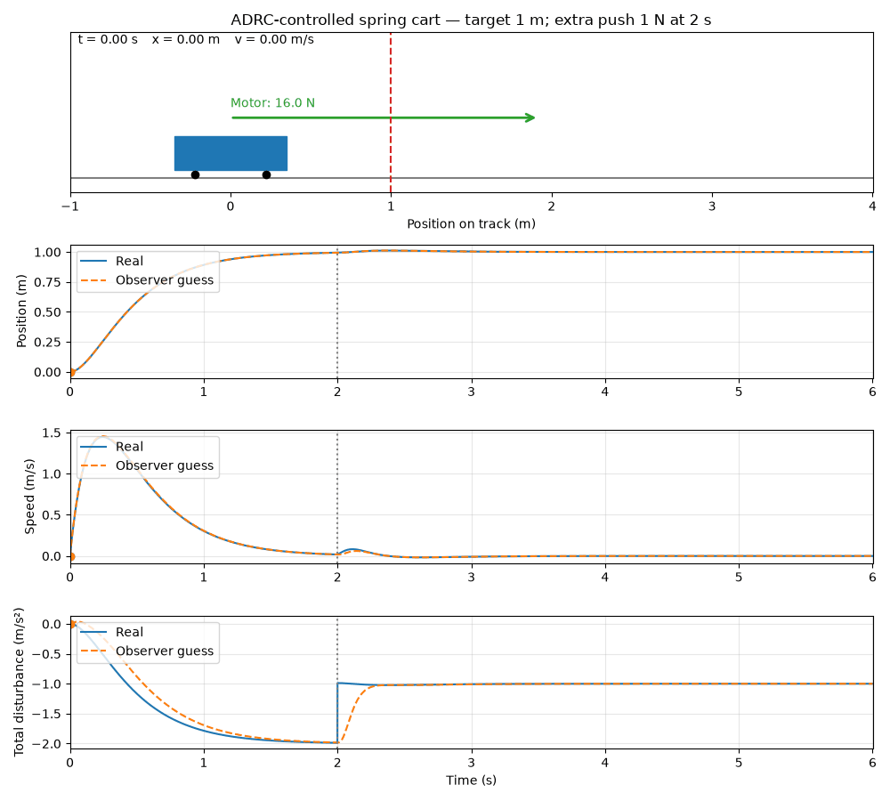

ADRC
learning Active Disturbance Rejection Control (ADRC) using a simple spring–mass system without a damper. A motor moves a cart attached to a spring. Our goal is to move the cart to a target position and hold it there, even when the spring pulls it back or an unknown external force pushes it. We will learn how to:
- Describe the cart’s motion using Newton’s law.
- Use an observer to estimate velocity and the combined effect of the spring and unknown forces, using measured position and motor input.
- Use those estimates to calculate a motor force that reaches the target, reduces bouncing, and counteracts disturbances.
The physical system
| Symbol | Meaning |
|---|---|
| \(m\) | Cart mass |
| \(a\) | Acceleration |
| \(u\) | Motor force we choose |
| \(x\) | Position relative to the spring’s resting position |
| \(k\) | Spring stiffness |
| \(d(t)\) | Unknown external force |
Control
Goal: Move the cart to target position and stop it there
There are two different things we need: - The physical equation describes how the cart moves. - The control equation decides what motor force to apply.
Physical equation
Step 2
Divide every term by mass tells us how forces change the cart velocity
Step 3
Group the equation into two parts
the equation become
Tip
Actual acceleration = acceleration from the motor + acceleration from the other effects.
The observer will estimate f. we do not need to calculate the spring and external push separately.
Step 4
Decide what acceleration we want
| Symbol | Meaning |
|---|---|
| r | Constant target position |
| x | current position |
| \(k_p\) | some gain |
- Cart below the target → positive acceleration.
- Cart beyond the target → negative acceleration.
- Larger position error → stronger response.
The term \(-k_dv\) opposes movement. This is braking produced by the motor, even though there is no physical damper.
Step 5
Find the motor force that produce that acceleration
Subtract \(f\) from both side
Then divide by \(b_0\)
Info
If the other effects already add acceleration, reduce the motor contribution. If they oppose us, increase it.
Step 6
We do not know the true velocity or disturbance. Our observer provides:
| Observer output | Estimates |
|---|---|
| \(z_1\) | Position \(x\) |
| \(z_2\) | Velocity \(v\) |
| \(z_3\) | Total disturbance \(f\) |
Then use \(z_3\) in place of \(f\)
Demo: use the Linear ADRC control equation
- Mass: \(1\) kg, so \(b_0=1\).
- Target: \(1\) m.
- Estimated position: \(0.5\) m.
- Estimated velocity: \(0\).
- Estimated disturbance: \(-2\ \mathrm{m/s^2}\), because the spring pulls left.
- Position gain: \(k_p=4\).
Wanted acceleration
The motor force is
The motor contributes \(+4\ \mathrm{m/s^2}\), while the spring contributes \(-2\ \mathrm{m/s^2}\). Together, they produce the wanted \(+2\ \mathrm{m/s^2}\).
Demo

The animation is generated by code/mass-spring.py. Its simulate() method
steps the physical system forward in time with a 1 ms timestep:
- It calculates the motor force from the ADRC control equation using the target position and the observer estimates \(z_1\), \(z_2\), and \(z_3\).
- It applies the motor force, the spring force \(-kx\), and any external force to the cart, then updates its position and velocity.
- It updates the extended state observer, which estimates position, velocity, and the combined disturbance.
The core of the simulation is:
How the controller works
The controller has one goal: make the cart behave as if it were moving toward the target with a desired acceleration. It uses the estimated position and velocity rather than requiring a velocity sensor:
- \(k_p(r-z_1)\) pulls the cart toward the target.
- \(-k_dz_2\) brakes the cart as it moves, preventing excessive bouncing.
The cart also has acceleration that the controller does not directly command: the spring force and the unknown external push. The ESO combines those effects into \(z_3\). The controller subtracts that estimate when calculating the motor force:
This means the controller does not need to know the spring stiffness or the external force exactly. For example, when the cart is at the 1 m target, the spring pulls it left. The controller sees this as a negative disturbance and applies enough positive motor force to hold the cart at the target.
At \(t=2\) seconds, the simulation adds an unknown \(1\,\mathrm{N}\) force:
The controller is not told about this force. It only sees the cart position and knows the force it commanded. The observer detects the resulting change and \(z_3\) converges to the total disturbance from both the spring and the extra push. The controller then compensates for that estimate, allowing the cart to return to the \(1\,\mathrm{m}\) target and remain there.
To regenerate the animation files: